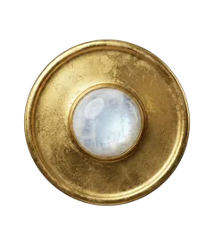
Pleine lune · éclipse pénombrale
Pleine lune de février 2027 en Vierge
- Date
- Dimanche 21 février 2027
- Heure exacte (Paris)
- 00 h 24
- Signe
- Vierge 2°
- Éclipse
- Pénombrale
Ce qu'elle remue pour chaque signe
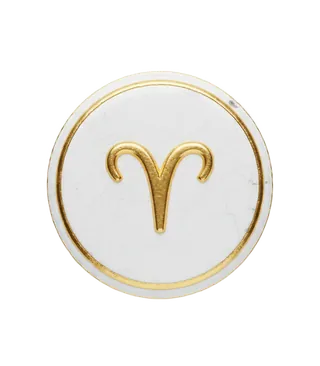
Bélier
Cette pleine lune éclaire votre quotidien : la fatigue se signale, une routine arrive à son terme.
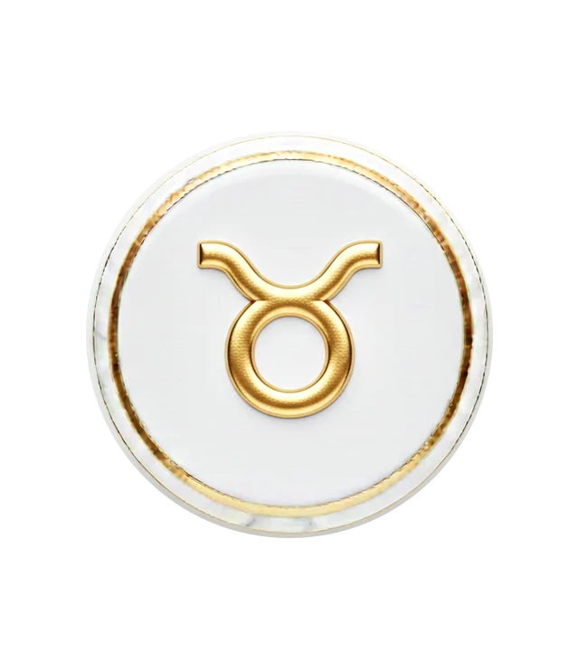
Taureau
Cette pleine lune éclaire votre vie amoureuse et créative : une déclaration, un aboutissement, un coup de cœur.
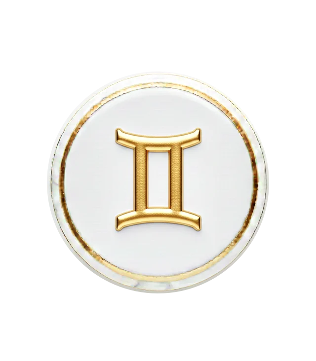
Gémeaux
Cette pleine lune éclaire votre foyer : une émotion familiale, un besoin de repos chez vous, une décision sur la maison.
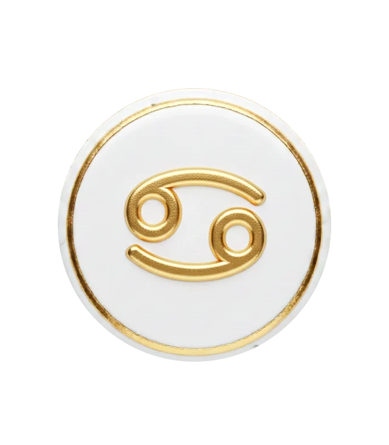
Cancer
Cette pleine lune éclaire vos échanges : une vérité se dit, une nouvelle arrive, un malentendu se dissipe.
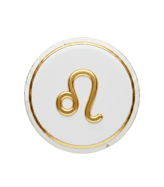
Lion
Cette pleine lune éclaire vos finances : un bilan, une dépense ou une rentrée d'argent met les choses au clair.
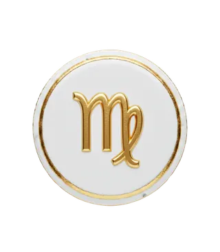
Vierge
Cette pleine lune éclaire vous-même : vos besoins personnels réclament de l'attention, et une émotion forte peut faire surface.
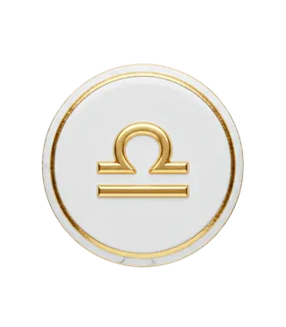
Balance
Cette pleine lune éclaire votre monde intérieur : besoin de solitude, de sommeil et de bilan ; écoutez vos rêves.
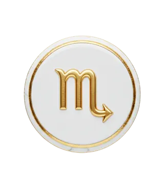
Scorpion
Cette pleine lune éclaire vos amitiés : un groupe, un projet collectif ou un rêve trouve son aboutissement.
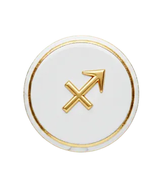
Sagittaire
Cette pleine lune éclaire votre carrière : une reconnaissance, une fin de cycle, un arbitrage entre travail et vie privée.
Capricorne
Cette pleine lune éclaire vos projets lointains : un voyage, un examen ou une conviction arrive à maturité.
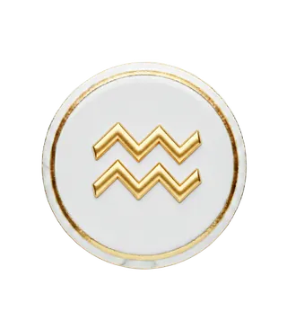
Verseau
Cette pleine lune éclaire vos zones d’ombre : un lâcher-prise, une transformation, un sujet délicat qui se règle.
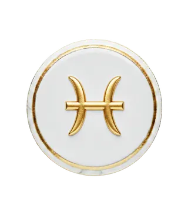
Poissons
Cette pleine lune éclaire votre couple et vos associations : une relation révèle ses forces et ses limites.
Quand a lieu la pleine lune de février 2027 ?
Pleine lune de février 2027 : dimanche 21 février 2027 à 00 h 24 (heure de Paris), dans le signe de la Vierge, à 2°. C'est aussi une éclipse pénombrale de Lune.
Que faire pendant la pleine lune ?
La pleine lune est un temps d'aboutissement et de lâcher-prise : faire le bilan, remercier, se libérer de ce qui pèse. C'est aussi le moment traditionnel pour purifier et recharger ses pierres.
Rituel
Le rituel de pleine lune
Lâcher prise, purifier ses pierres, écrire ce que l’on laisse derrière soi.
Lire le rituel